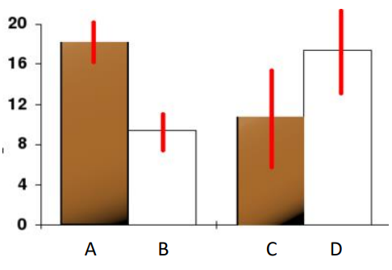
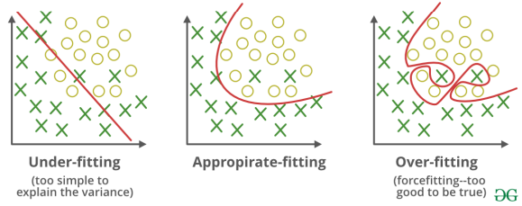
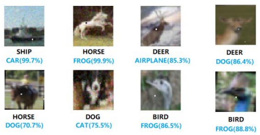
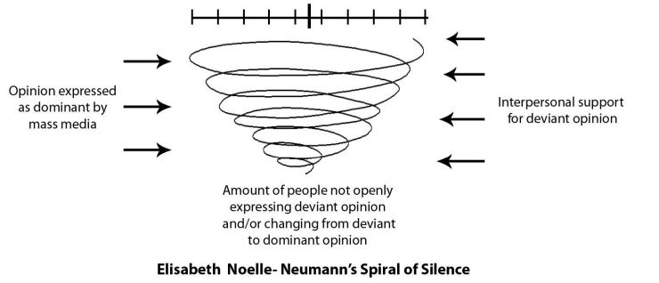

해당 글은 LG에서 지원하는 LG Aimers의 교육 내용을 정리한 것으로,
모든 출처는 https://www.lgaimers.ai/입니다.
데이터 처리 및 수집에서 윤리 이슈
데이터 해석
상관관계와 인과관계 구별하기
데이터 전처리 및 분석
도표에 Error bar 추가하기

적합한 통계 테스트 찾기
아웃라이어 제거하기
데이터 정규화하기
EDA(Exploratory Data Analysis) 충분히 하기
데이터의 양
100만 데이터는 있어야 충분히 학습 됨
하지만 모델의 용량이 부족하다면 언더피팅
모델의 용량이 데이터보다 크다면 오버피팅

학습 데이터와 테스트 데이터는 달라야 함
Black Box Algorithm
실제 사례에서는 성능 뿐만 아니라 설명력도 중요
사후 설명력 post-hoc explainability
처음부터 설명 가능한 모델 interpretable model
one pixel attack: 하나의 픽셀 변화로 결과값이 잘못되는 것을 이용한 공격

웹 데이터
정보의 대표성
많이 언급된다고 꼭 중요한 것은 아니다
Spiral of silence 이론: 목소리가 큰 의견만 대표성을 띠게 되는 편향 현상

정보의 진실성
infodemic: 오정보가 사실 정보만큼 많아서 어떤 정보가 사실인지 알 수 없는 정보 과부화 현상
우리가 만드는 서비스가 사용자에 꼭 필요한 데이터만을 요청하는지, 잘 보호되고 있는지 고려
잊혀질 권리
법적 제도
GDPR: 개인 정보 보호, 과다 광고, 혐오 표현 노출 플랫폼을 규제하는 EU 제도
Digital Services Act: 성별, 인종, 종교 등에 기반한 알고리즘으로 개인화 추천 광고 노출 X / 어린이 대상 개인화 추천 광고는 전면 금지 / 불법 콘텐츠 유통 막기
AI와 윤리적 문제
알고리즘의 결과들이 우리의 윤리 규범과 잘 맞는가
ex) COMPAS, Amazon 채용, 챗봇
데이터의 확보, 전처리, 분석, 해석의 전 과정이 중요
고품질의 데이터가 입력되었을 때 학습 결과도 유의미하며, 데이터가 가지는 오차 범위와 특이점, 대표성에 대한 충분한 이해를 가지고 접근해야 함
알고리즘의 설명력, 편향, 신뢰의 문제에 주의
블랙박스 알고리즘이 실제 사회에서 사용되기 위해서는 많은 경우 설명력 보강이 필요하며, 노이즈와 데이터 가변성에도 대처 가능한 알고리즘을 개발하도록 노력
AI가 다양한 사회 서비스에서 인간 결정을 돕거나 대체함에 따라 윤리적 의사결정이 확보되도록 점검